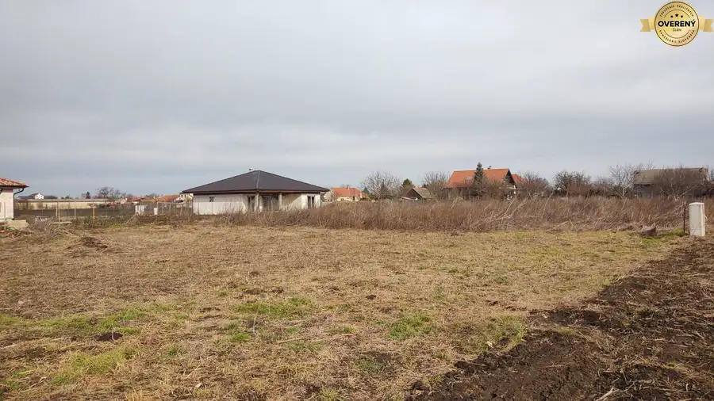

31 nových stavebných pozemkov v modernej štvrti – siete, optika, cesta
Palárikovo
- Plocha500 m²
- Poschodie0.
O nehnuteľnosti
Hľadáte miesto, kde bude mať váš rodinný dom priestor, súkromie a zároveň modernú infraštruktúru?
Predstavujeme projekt 31 stavebných pozemkov v Palárikove – lokalitu, ktorá má jasnú koncepciu a dlhodobú hodnotu.
Na výber je 31 pozemkov s výmerami od 363 m² až po 1 028 m², aby si každý našiel veľkosť, ktorá presne zodpovedá jeho vízii bývania.
**Dostupné výmery (m²):**
1 - 996 m² voľný cena: 137 448€
2 - 568 m² voľný cena: 78 384€
3 - 503 m² voľný cena: 69 414€
4 - 386 m² voľný cena: 53 268€
5 - 382 m² voľný cena: 52 716€
6 - 377 m² voľný cena: 52 026€
7 - 372 m² voľný cena: 51 336€
8 - 368 m² voľný cena: 50 784€
9 - 363 m² voľný cena: 50 094€
10 - 462 m² voľný cena: 63 756€
11 - 672 m² voľný cena: 92 736€
12 - 952 m² voľný cena: 131 376€
13 - 543 m² voľný cena: 74 934€
14 - 500 m² voľný cena: 69 000€
15 - 385 m² voľný cena: 53 130€
16 - 381 m² voľný cena: 52 578€
17 - 377 m² voľný cena: 52 026€
18 - 372 m² voľný cena: 51 336€
19 - 368 m² voľný cena: 50 784€
20 - 364 m² voľný cena: 50 232€
21 - 457 m² voľný cena: 63 066€
22 - 697 m² voľný cena: 80 155€ (znížená cena za pozemok 115/ m2)
23 - 556 m² voľný cena: 76 728€
24 - 507 m² voľný cena: 69 966€
25 - 895 m² voľný cena: 123 510€
26 - 1012 m² voľný cena: 139 656€
27 - 982 m² voľný cena: 135 516€
28 - 944 m² voľný cena: 130 272€
29 - 892 m² voľný cena: 123 096€
30 - 552 m² voľný cena: 63 480€ (znížená cena za pozemok 115/ m2)
31 - 1028 m² voľný cena: 141 864€
Projekt ponúka:
✔ kompletné inžinierske siete
✔ optický internet
✔ novú prístupovú cestu
✔ moderné a jednotné prostredie novej štvrte
✔ bezpečné a pokojné bývanie vhodné pre rodiny
✔ Vypracovanie projektu RD a aj jeho výstavbu v prípade že kupujúci má zabezpečené
financovaie
Lokalita kombinuje tiché rezidenčné prostredie s výbornou dostupnosťou. Rýchle napojenie na Šurany a Nové Zámky zabezpečuje komfortné dochádzanie.
V obci nájdete nákupné centrum Markett (Tesco, Teta, COBBYS PET SHOP, 1.Day), Jednotu, reštaurácie, Döner Pizza & Kebab, wellness aj historický kaštieľ.
Najväčšou výhodou je pripravenosť projektu – siete, cesta aj urbanistický koncept sú už vyriešené. Vy sa môžete sústrediť len na návrh a realizáciu svojho domu.
Toto nie je len kúpa pozemku.
Je to vstup do novej štvrte, ktorá bude mať svoju hodnotu dnes aj o roky.
V CENE NEHNUTEĽNOSTI:
▸Vyhotovenie: Zmluva o Budúcej kúpnej zmluve, Kúpna zmluva o prevode vlastníctva nehnuteľnosti, Návrh na vklad vlastníckeho práva k nehnuteľnosti
▸Úhrada kolkov za návrh na začatie konania o povolení vkladu práva k nehnuteľnosti v lehote 30 dní
▸Úhrada poplatkov za úradné overenie podpisov na kúpnych zmluvách
▸Doručenie podkladov na kataster po úhrade celej kúpnej ceny na účet predávajúceho
▸Asistencia pri odovzdaní nehnuteľnosti, prehlásení energií a služieb
▸Ďalšiu potrebnú asistenciu podľa dohody
Odkaz na videá:
https://1drv.ms/f/c/5228844f20ce6db9/EpkIfMhlUYRKloxTlnJjOKABZiKGtWpB8KsyUqA_nQygfg
Parametre
| Rozloha pozemku | 500 m² |
|---|---|
| Poschodie | prízemie |
| Voda | verejný vodovod |
| El. napätie | 230/400V |
| Plyn | nie |
| Kanalizácia | áno |
| Internet | optika |
| Terén | rovina |
| Pripravené na výstavbu | schválené v územnom pláne |
| Dátum zverejnenia | 10. 2. 2026 |
Kde to je
Mohlo by Vás zaujímať

Pozemok 65 400 €Ponúkame na predaj pozemok v obci Rastislavice Rastislavice 1270 m² Pozemok je rovinatý. Pri pozemku sa nachádza elektrická prípojka. V obci sa nachádza materská a aj základná škola, supermarket Jednota, futbalové… Pozemok
53 200 €Ponúkame na predaj pozemok v obci Rastislavice
Rastislavice
1034 m²
V obci sa nachádza materská a aj základná škola, supermarket Jednota, futbalové ihrisko, penzión a reštaurácia. V susednej obci sa nachádza Thermal…
Pozemok
53 200 €Ponúkame na predaj pozemok v obci Rastislavice
Rastislavice
1034 m²
V obci sa nachádza materská a aj základná škola, supermarket Jednota, futbalové ihrisko, penzión a reštaurácia. V susednej obci sa nachádza Thermal…
 Pozemok
36 000 €Ponúkame na predaj pozemok v obci Rastislavice.
Rastislavice
676 m²
Pozemok je rovinatý. Pri pozemku sa nachádza elektrická prípojka. V obci sa nachádza materská a aj základná škola, supermarket Jednota, futbalové…
Pozemok
36 000 €Ponúkame na predaj pozemok v obci Rastislavice.
Rastislavice
676 m²
Pozemok je rovinatý. Pri pozemku sa nachádza elektrická prípojka. V obci sa nachádza materská a aj základná škola, supermarket Jednota, futbalové…